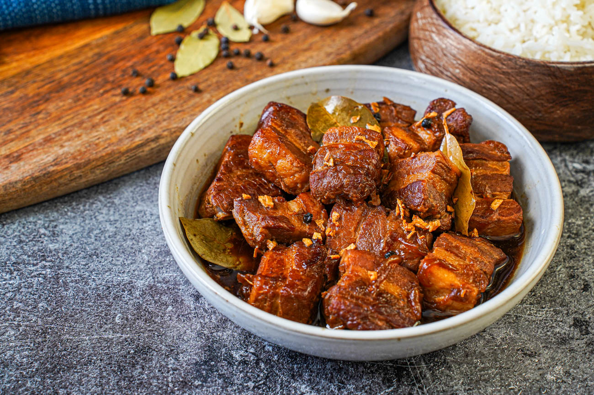
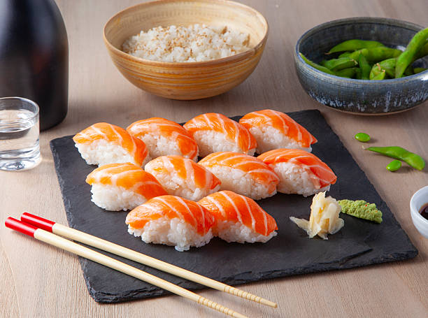

Borders
Try these popular dishes from the Philippines.


A deeply comforting savory stew featuring chicken, pork, or a combination of both, slow-cooked in vinegar, soy sauce, garlic, and bay leaves.
View Recipe →
A fiery, deeply savory Filipino stew made of pork belly cooked in rich coconut milk and chili peppers.
View Recipe →
The ultimate summer dessert of the Philippines, celebrated for its vibrant colors, contrasting textures, and refreshing taste.
View Recipe →
Got a Filipino dish you'd love to see featured next? Let us know your suggestion!
SuggestionTry these popular dishes from Japan.

A traditional Japanese dish defined fundamentally by its use of vinegared short-grain rice.
View Recipe →A popular Japanese noodle dish served with flavorful broth and various toppings.
View Recipe →A popular Japanese snack made from a wheat-flour batter and traditionally filled with octopus.
View Recipe →
Got a Japanese dish you'd love to see featured next? Let us know your suggestion!
SuggestionTry these popular dishes from Mexico.
A traditional Mexican dish made with a small, hand-sized corn or wheat tortilla folded around a savory filling.
View Recipe →A Mexican-style dish traditionally made from seasoned and slow-cooked pork.
View Recipe →A Mexican dish made with a tortilla and melted cheese, often combined with other fillings.
View Recipe →
Got a Mexican dish you'd love to see featured next? Let us know your suggestion!
SuggestionTry these popular dishes from Italy.
A savory flatbread dish made from flattened dough topped with tomato sauce, cheese, and various meats or vegetables.
View Recipe →A classic Italian pasta dish made with layers of pasta, sauce, cheese, and other fillings.
View Recipe →A popular Italian dessert made with coffee-soaked ladyfingers, mascarpone cream, and cocoa.
View Recipe →
Got an Italian dish you'd love to see featured next? Let us know your suggestion!
Suggestion